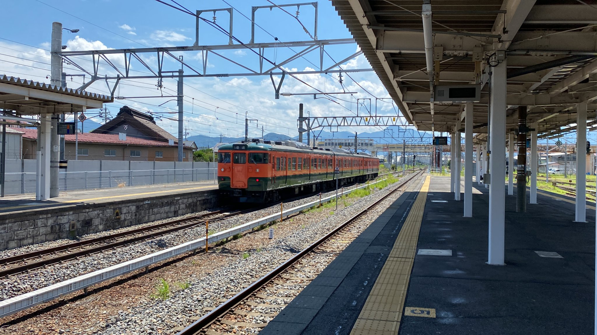
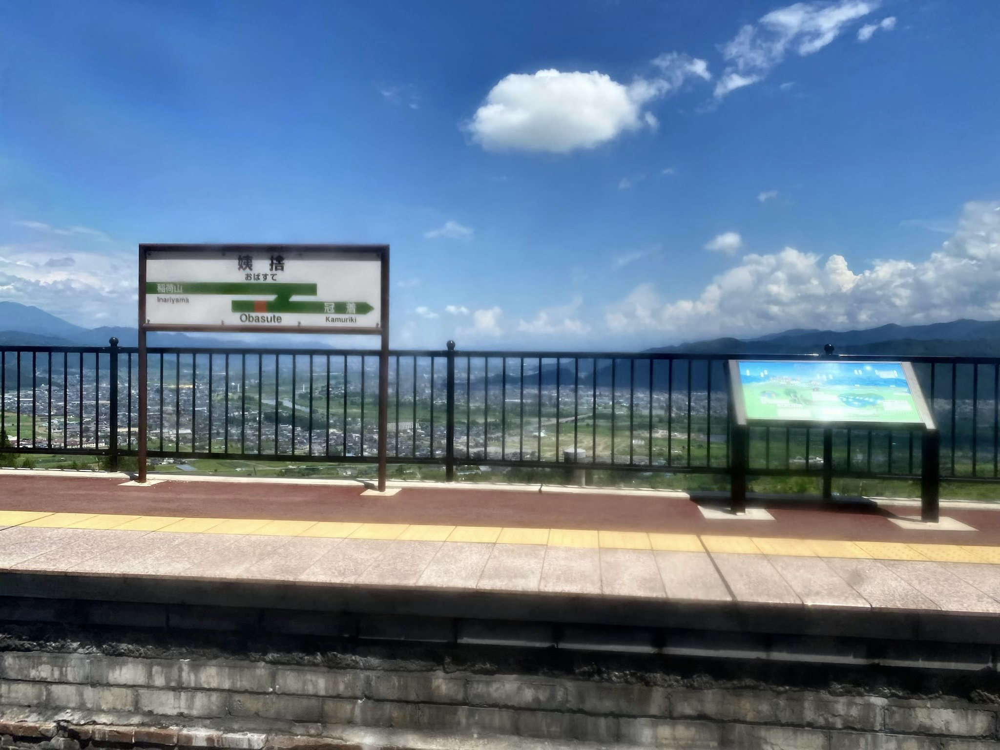

国鉄車に乗ろう ～一般編～
国鉄車両は特急だけでなく普通列車も走っているので気軽に乗ることができる。
それが「115系」である。115系には数多くの塗装があり今現在も数種類の塗装がある。これは長野県の「しなの鉄道」で乗ることができる。画像は2022年8月に乗車。

だが、現在115系はSR1系(右)への置き換えが進んでいる。早めに乗っておこう。
おまけ ～景色編～
実は新潟県の「えちごトキメキ鉄道」に「413系・455系」が走っているが乗ったこともなく写真もないため代わりに景色の紹介。
長野駅の近く、JR篠ノ井線の「姨捨(おばすて)駅」。日本三大車窓の一つである。